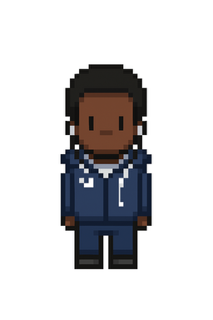

Souf Abdjahi-Dine
Étudiant en BTS SIO option SLAM | Développeur Web & Logiciel
👨💻 Mon Parcours
Actuellement étudiant en BTS SIO (Services Informatiques aux Organisations), je me spécialise en Solutions Logicielles et Applications Métiers (SLAM). Mon objectif est d'acquérir les compétences nécessaires pour concevoir et développer des applications web, mobiles et logicielles robustes et efficaces.
🎓 Diplômes et Formations
- En Cours BTS SIO option SLAM Suzanne Valadon
- 2024 Baccalauréat Général Lycée Turgot
- 2021 Diplôme National du Brevet Collège Guy de Maupassant